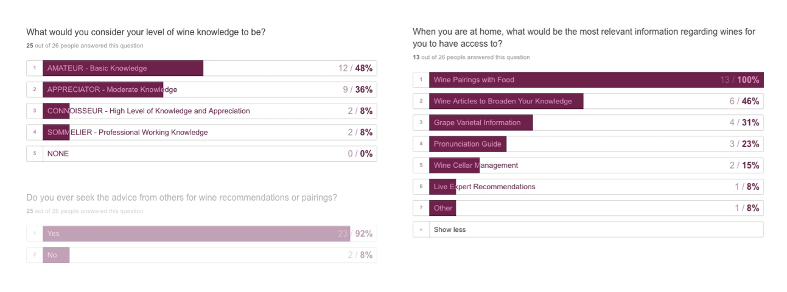
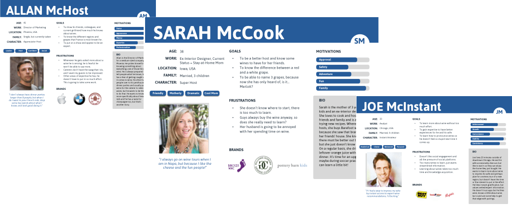
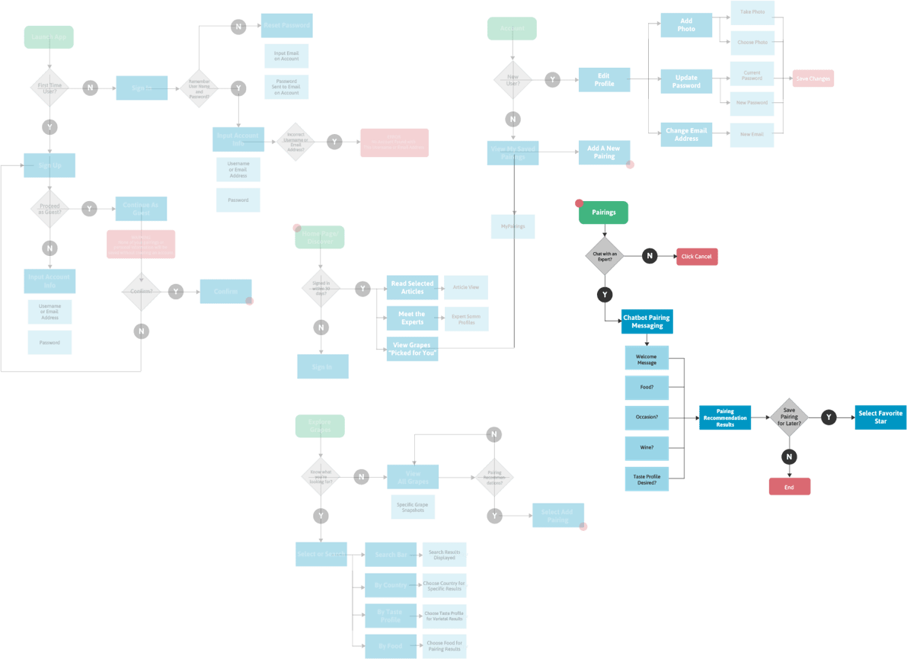
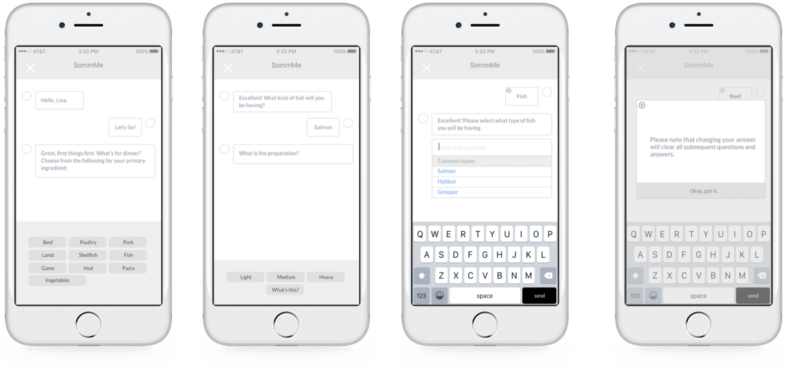
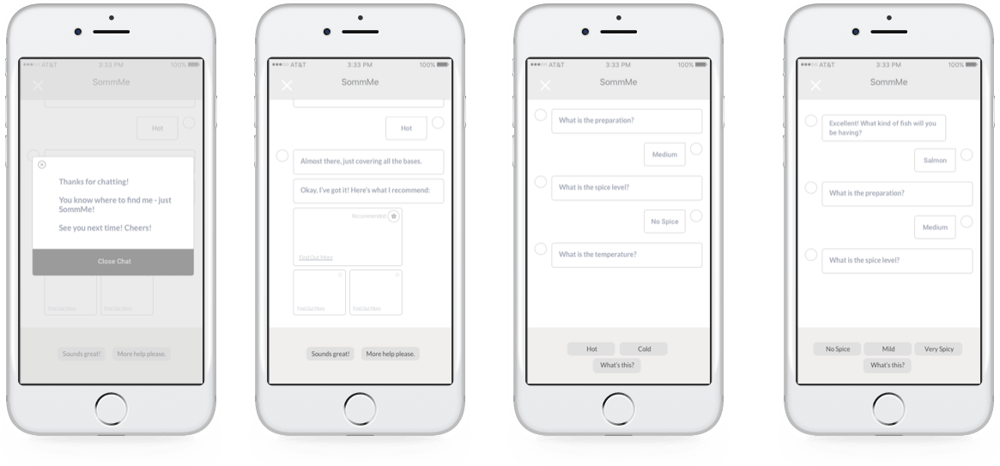
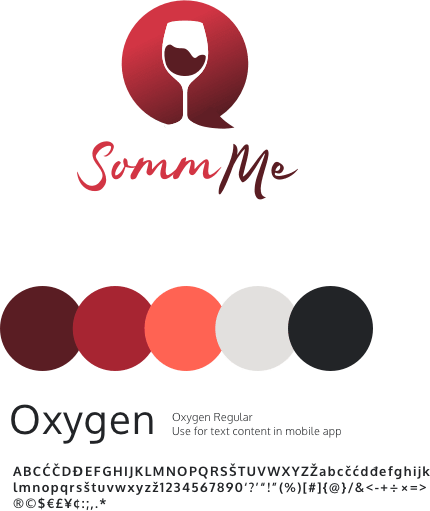
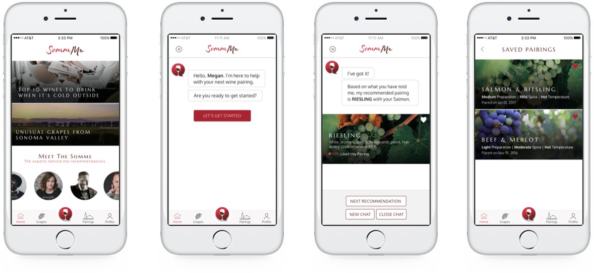

SommMe is a mobile application that uses chatbot interaction to facilitate accurate recommendations for food and wine pairings based on a specific sequence of questions and answers that results in a primary recommendation based on essential, international grape pairing connections.
The goal of SommMe is to change the way that amateur wine consumers learn about the vast world of wine and receive approachable, expert recommendations to enhance the experience of drinking wine with a meal.
As the Lead User Experience Designer and Product Manager on the SommMe project, I started the process by the identifying the problem alongside establishing project objectives and defining the scope. Responsibility spanned the entire scope of the design cycle, from concept to prototype, I managed the project planning and enforced staying on track to deliver on-time, on-budget.
There are many wine applications that exist in the market, but most are cumbersome and content heavy which do not achieve the knowledge acquisition objective, nor do they increase an understanding or an appreciation for how the right pairing can enhance a meal. With the applications that exist, there are many that provide specific label recommendations that link to purchase options often driven by paid advertising.
The driving requirements for SommMe were for an approachable, understandable, personal, and accurate wine pairing recommendation tool that will make users explore and interact with pairings and understand more about the world of wine.
It was clear that there was a gap and a need for a mobile application that utilized in-app chat interactions based on specific questions and metrics; resulting in quality, personalized food and wine pairing recommendations. We found that by utilizing emerging chatbot technology we found the solution to address the revealed and recurring problems with wine applications and options filtering.
To start, I built a survey for users who drink wine spanning varying levels of wine knowledge and consumption to understand when and why they look for recommendations and focusing on overall, broad motivations.
After discovering with broad surveys that users were looking to have easy access to essential, simple, approachable wine pairing information, I went into more detail with user interviews to expand product scope and reach a clear focus and solution.
Through the surveys and interviews, I uncovered a number of patterns and user insights that shaped the direction of the design of SommMe:
Keeping user personas and user stories in mind, I began to target an MVP that allowed for the ability to interact with an in-app chat with an expert for wine pairings. At this point, through building user flows I was able to outline and start to pull together the experience. All of the scenarios were outlined in the user flows to build the first low-fidelity wireframes for SommMe.
After sketching multiple concepts and designing prototypes to solve this problem, we found this to be a prime opportunity to utilize a new platform to address the recurring problems with chatbot technology even though it has not been used in this realm. As outlined in the user research data, the ability to have access to personalized wine recommendations without feeling intimidated and without being forced to purchase was key and we worked through an agile process to design an interactive prototype for the mobile application ready handoff for development.
The next step after addressing user flows was to wireframe a clear and simple way for users to engage with the SommMe chat for pairings. I sketched rapid low-fidelity wireframes and used a clickable prototype with InvisionApp to facilitate an internal discovery of the user’s journey.
Moving on to high-fidelity wireframes, we identified the information architecture for the SommMe chat and the homepage and pairings flows.
 The logo mark was designed with communication and wine at the core. The SommMe logo should be able to stand alone and be understood. Messaging applications that utilize chat bubbles are clearly showing the ability to communicate and that was important to convey as it is the key differentiator in this product.
SommMe’s brand identity reflects the modern, approachable, conversational nature of chat messaging coupled with the elegance of the wine product. The bold color palette and type were chosen with mobile devices in mind.
 What worked? The fact that there is a confirmed and clear gap between users that want recommendations and the resources out there to get accurate and personalized recommendations. Users are open to chatbot technology and a user experience that flows with a conversation for recommendations.
What didn’t work? A live chat feature. I envisioned this being an actual service to the user. But, I found out that people aren’t interested to pay for live help, rather to have an exploratory tool where they could access information that has been filtered and personalized based on a criteria was sufficient.
Through applying user feedback and the overall goals of what we were wanting to accomplish, the empathetic process of research and design gave a clear direction for designing an effective solution to the problem.